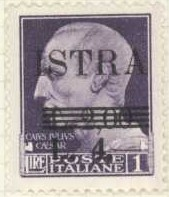
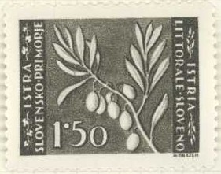
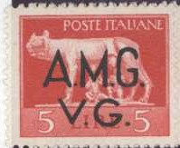
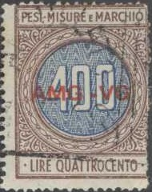

Return To Catalogue - Italy overview
Note: on my website many of the
pictures can not be seen! They are of course present in the
catalogue;
contact me if you want to purchase the catalogue.
Some stamps of Italy were overprinted 'ISTRA', 'FIUME RIJEKA' or 'TRIESTE TRST' in 1945.
'L.0,10' on 5 c brown 'L.0,50' on 25 c green (first type, '25' at bottom right) 'L.0,50' on 25 c green (second type, '25' at upper left) 'L.1,00' on 50 c violet 'L.1,50' on 75 c red 'L.2,00' on 1 L violet 'L.6.-' and bars on 'L.1,50' on 75 c red 'L.10.-' and bars on 'L.0,10' on 5 c brown On Italy Imperial issue of 1929

'L.2,00' on 1 L violet 'L.4.-' and bars on 'L.2,00' on 1 L violet On Italy Imperial issue of 1929 with overprint 'REPUBLICA SOCIALE ITALIANE'
'L.0,50' on 75 c red (overprint vertically) 'L.1,00' on 50 c violet 'L.20.-' and bars on 'L.1,00' on 50 c violet On Bandiera Brothers issue 'L.0,50' on 25 c green 'L.2,00' on 1 L violet 'L.5,00' on 2.50 L red On airmail stamp of the Imperial issue of 1929
'L.0,50' on 25 c green 'L.1.00' on 50 c brown 'L.2.00' on 1 L violet
I've seen several inverted overprints.
Inverted overprint
2 L on 25 c green (first type, '25' at bottom right 4 L on 1 L violet 5 L on 10 c brown 6 L on 10 c brown 10 L on 25 c green (second type, '25' at upper left) 16 L on 75 c red Larger overprint 20 L on 1.25 L green (express stamp)
20 c + 1 L on 5 c brown (red overprint and surcharge) 25 c + 1 L green (blue overprint and surcharge, second type, '25' upper left) 30 c + 1 L brown (blue overprint and surcharge) 50 c + 1 L violet 1 L + 1 L violet 1.25 L + 2 L blue (red overprint and surcharge) 2 L + 2 L on 25 c green (red overprint, first type, '25' bottom right) 2 L + 3 L green (red overprint and surcharge) 5 L + 5 L on 1 L violet (red overprint and surcharge) 10 L + 10 L on 30 c brown (red overprint and surcharge) 20 L + 20 L on 5 c brown (blue overprint and surcharge)
I have seen various shifted, double and inverted overprints:
Misprints, inverted overprint and double overprint
Stamps of Yugoslavia, with overprint or inscription 'VUJA-STT' or 'STT VUJNA' were issued for Trieste (Zone B). Other stamps with inscription 'T.L. TRIESTE VUJA' or 'S.O. TRSTA VUJA' were issued for the same Zone B (1950).
Fiscal stamps of Italy, overprinted with star, 'Istra, Slov. Prim. Rijeka' and surcharged
'L.0.50' on 20 L lilac (King Victor Emanuel III in an ellipse) 'Lira 1.-' on 20 c red (star in the middle) 'Lire 2.-' on 1 L brown (star in the middle) 'L.5.-' on 1 L brown 'L.10.-' on 5 c brown 'Lira 20.-' on 4 L green (King Victor Emanuel III in a square) 'L.30.-' on 5 c brown 'L.100.-' on 10 c green 'L.130.-' on 20 c red 'L.300.-' on 3 L orange 'L.1000.-' on 50 c blue Further surcharged 'L. 1.-' and bars on 'L.150.-' on 3 L orange 'L. 5.-' and thick bar on 'L.130.-' on 20 c red '10.-' (vertically) on two thick small bars on 'L.130.-' on 20 c red
I've also seen some fiscal stamps of Italy ('MARCA DA BOLLO'), with an overprint 'VUJA' and arms on the face of the king, together with a surcharge:
'L.5.-' on 4 L green (King Victor Emanuel III in a square) 'L.10' on 10 c green (King Victor Emanuel III in a circle)
I've also seen a fiscal Marca da Bollo stamp of Italy (King Victor Emanuel III in a circle) with a red 'JUGOSLAVIJA SLOVENIJA' and red overprint (all in red): 4 L green (with already a red 'PROVINCIA DI LJUBIANA' overprint).
Reduced size
0.25 D brown 0.50 D orange 1 D green 1.50 D red 3 D brown Further overprinted 'Pro Maternita e Infanzia' in an arc 0.50 D orange (red overprint) 1 D green (lilac overprint) 1.50 D red (blue overprint)

On fiscal stamps with arms in circle
'Lire 0,05' on 10 p orange and yellow
'Lire 0,10' on 20 p green and yellow
'Lire 0,10' on 25 p brown and yellow
'Lire 0,40' on 1 D blue and grey
'Lire 0,80' on 2 D brown and yellow
'Lire 1,20' on 3 D lilac and grey
'Lire 2,-' on 5 D green and olive
'Lire 8,-' on 20 D blue and violet
'Lire 40,-' on 100 D red and orange
On fiscal stamp with arms in rectangle
'Lire 0,20' on 50 p orange
'Lire 2.-' on 5 D blue and grey ('PORESKA MARKA')

'Lire 0,20' on 50 p orange and grey 'Lire 0,40' on 1 D blue and grey

'Lire 0,05' on 10 p lilac 'Lire 0,10' on 20 p green 'Lire 0,10' on 25 p violet 'Lire 0,20' on 50 p blue 'Lire 0,40' on 1 D orange 'Lire 0,80' on 2 D brown 'Lire 1,20' on 3 D green 'Lire 2,-' on 5 D green 'Lire 4,-' on 10 D blue 'Lire 20,-' on 50 D lilac
'Lire 0,10' on 25 p light brown
'Lire 0,20' on 50 p orange
'Lire 0,40' on 1 D green
'Lire 1,20' on 3 D black ('BANOVINA HRVATSKA' in red)
'Lire 4,-' on 10 D brown and grey
Overprinted 'Imposta sull'entrata'
1 L orange
2 L green
4 L lilac
100 L (LIRE CENTO') olive
105 L ('CENT.CINQUE') light brown
140 L ('CENT QUARANTA') blue
With further overprint 'Upravno Povjerenictvo Susak-Krk' in three lines
2 L green
105 L light brown
140 L blue
All the above stamps seem to have been printed alternately with and without a star in the upper left corner.
With overprint 'Upravno Povjerenictvo Susak-Krk' only 5 c light brown 20(?) c red Overprinted 'Fiume-Rijeka Bollo - Biljeg' bars on old country name and red star

'Lire 5.-' on 105 light brown

0,25 dark green (grapes) 0,50 brown (donkey) 1 red (village in ruins) 1 green (village in ruins) 1.50 grey (tree with fruits) 2 dark green (Duino, house on clifs overseeing sea) 3 red (Duino, design as 2) 4 blue (Pula harbour: ship and amphitheatre) 4 red (Pula harbour) 5 black (the house of Vladimir Gortan) 6 blue (Pula harbour, design as 4) 10 brown (ploughing) 20 violet (tuna fish) 20 blue (tuna fish) 30 lilac (Solkan bridge) Surcharged '1 =' on 20 blue '2 =' on 30 lilac
Specialists distinguish between Ljubljana, Zagreb and Belgrade printings. The Ljubljana printing has perforation 10 1/2 x 11 1/2 (0,25; 0,50, 1 red, 1.50, 2, 4 blue, 5, 10, 20 violet and 30). The Zagreb printing has perforation 12 (0,25; 0,50, 1 green, 1.50, 2, 4 red, 5, 10, 20 blue and 30) and the Belgrade printing has perforation 11 1/2 (1 green, 2, 3 and 6).
Unissued stamps
Non issued stamps: 1 L red and 1 L brown (same design: cathedral of Trieste); the design of these stamps was rejected. I've only seen them imperforate.
I've seen the values 2 and 5 imperforate.
I've also seen a postcard in a similar design, with the palace of the governor in Rijeka and a bridge, inscription 'VOJNA UPRAVA JUGOSLOVENSKE ARMIJE ZA JUL KRAJINU, ISTRU, RIJEKU I SLOV. PRIMORJE DIPISNICA - Cartolina postale' next to the design; value 3 L green.
'1. Lit' on 0,25 green '2. Lit' on 30 lilac (two types, '2' different) '4. Lit' on 0,50 brown '8. Lit' on 0,50 brown '10. Lit' on 0,50 brown '20. Lit' on 0,50 brown '50. Lit' on 20 violet
'Lira 1.-' on 1 green (two types dot behind '1' squarish or round) 'Lira 2.-' on 1 green (two types dot behind '2' squarish or round) 'Lira 4.-' on 1 green (two types dot behind '4' squarish or round) 'Lira 10.-' on 30 lilac 'Lira 20.-' on 30 lilac 'Lira 30.-' on 30 lilac
'1.- Lira' on 0,25 green '2.- Lira' on 0,25 green '4.- Lira' on 0,25 green 'Lira 10.-' on 20 blue 'Lira 20.-' on 20 blue 'Lira 30.-' on 20 blue
On lilac stamps (partisan): postage stamps 'L 1 =' on 9 lilac 'L 2 =' on 9 lilac 'L 5 =' on 9 lilac 'L 10 =' on 9 lilac 'L 35 =' on 9 lilac On blue arms stamp: official stamps '= L 1.50 =' on 0,50 blue '= L 3 =' on 0,50 blue '= L 6 =' on 0,50 blue '= L 15 =' on 0,50 blue '= L 50 =' on 0,50 blue
'= L 1 =' on 1 D blue '= L 2 =' on 1 D blue '= L 6 =' on 1 D blue '= L 10 =' on 1 D blue '= L 30 =' on 1 D blue
Some fiscal stamps of Yugoslavia were overprinted 'Co.Ci.' for Slovenia in 1941.
Julisch-Venetien - Venetie Julienne
Return To Catalogue - Italy overview - 'Venezia Giulia' or 'Venezia Tridentina' on Italy
Yugoslavia left Trieste and the territory became under the administration of the Allied Military Government. Some stamps of Italy were used, overprinted 'A.M.G. V.G.' (Allied Military Government Venetia Guilia).

10 c brown (Augustus with fasces) 20 c red (Julius Ceasar with fasces) 20 L green (Julius Ceasar with fasces) On stamps without fasces 10 c brown (Augustus) 20 c red (Julius Ceasar) 60 c orange (woman's head) 60 c green (King Victor Emanuel III) 1 L violet (Julius Ceasar) 2 L red (woman's head) 5 L red (wolf) 10 L violet (woman's head)
I have seen inverted and double overprints.
25 c blue (hand holding torch of freedom) 2 L brown ((man pruning tree)) 3 L red (design as 25 c) 4 L orange (design as 25 c) 6 L violet (hand planting tree) 20 L violet (design as 25 c) 25 L green (broken tree with goddess of Italia in background, larger size) 50 L brown (design as 25 L) 100 L red (family design, but larger size)
On the 100 L value the overprint is larger (see image above).
On horse design stamp(small size, small overprint) 50 c brown (horse with wings) On 1946 airmail stamps (hands with aeroplane and swallows) 'A.M.G. V.G.' overprint larger (as on the 100 L postage stamp of 1945) 1 L black (shaking hands) 2 L blue (swallows) 5 L green (swallows) 10 L red (shaking hands) 25 L blue (swallows) 25 L olive (swallows) 50 L green (shaking hands)
10 L blue (man with horse) 30 L violet (foot with wings)

60 L lilac and blue (red overprint) 300 L orange and blue 400 L brown and blue (red overprint)
'IMPOSTA SULL'ENTRATA INDUSTRIA E COMMERCIO', large sized stamp with wolf 100 L red
'MARCA DA BOLLO' with Roman head 1 L brown 2 L lilac 'IMPOSTA SULL'ENTRATA INDUSTRIA E COMMERCIO', wolf 2 L orange 3 L grey 10 L brown 'IMPOSTA SULL'ENTRATA INDUSTRIA E COMMERCIO', Roman head 5 L blue 10 L brown
Other values might exist.
Stamps - Francobolli - Timbres - Briefmarken - Postzegels


{kind=link}
{kind=link}